1088D26 rigid intake pipe to water pump - r+r for versions with a/c
- Path
- Procedures > 10 ENGINE > 1088 ENGINE COOLING > 1088D coolant hoses and sleeves > 1088D26 rigid intake pipe to water pump - r+r for versions with a/c
- Kind
- repair procedure (removal / refitting; the operation number is the code)
- Applies to
- engines: 1.6 TS , 1.8 TS, 2.5 V6, 3.2 V6, 1.9 JTD 8v , 2.4 JTD 10v; all production periods
- Interactive page
- https://sloeber94.github.io/elrnDB-a156/en/#/3237634
Applies to: engines: 2.5 V6, 3.2 V6; all production periods
 Removing
Removing
 Refitting
RefittingPosition the vehicle on the ramp.
Proceed with removal 4450B10 Front WHEEL (one) - R.R. (Left side).
Proceed with removal 7055B54 under-engine guard - r r .
Proceed with removal 7055B64 Engine compartment DUST shield in front wheel arch (one), left or right - R.R. (Left side).
1. Press the rapid attachment springs, by hand, and disconnect the lower coolant outlet hose from the radiator.
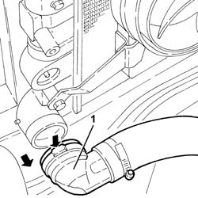
Applies to: engines: 2.5 V6, 3.2 V6; all production periods
1. Undo the nuts fixing the exhaust pipes from the exhaust manifold, manifold side.
2. Undo the nuts (2a) and remove the U-bolt (2b) supporting the exhaust pipe from the right exhaust manifold.
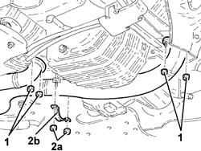
Applies to: engines: 2.5 V6, 3.2 V6; all production periods
1. Loosen the bands (1a) and remove the air intake pipe between the flow meter and the throttle casing (1b), releasing it from the oil vapour recirculation pipe.
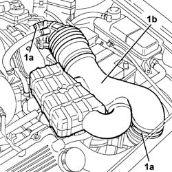
Applies to: engines: 2.5 V6, 3.2 V6; all production periods
Proceed with removal 5530B10 battery - r+r .
Proceed with removal 5530B52 Battery DRIP TRAY/SUPPORT - R.R. .
1. Disconnect the electrical connection from the air flow meter.
 | Name | Connector |
|---|---|---|
1 | Air flow meter |
2. Disconnect the electrical connection for the rpm sensor.
| Name | Connector |
|---|---|---|
2 | Rpm sensor |
3. Disconnect the electrical connection for the cam angle sensor.
| Name | Connector |
|---|---|---|
3 | Timing sensor |
4. Disconnect the electrical connection for the rear detonation sensor.
| Name | Connector |
|---|---|---|
4 | Detonation sensor - 1 |
5. Disconnect the coil and injector coupling.
| Name | Connector |
|---|---|---|
5 | Coils and fuel injectors connection |
6. Disconnect the electrical connection from the engine coolant temperature sensor.
| Name | Connector |
|---|---|---|
6 | Engine temperature sender unit |
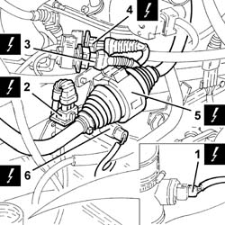
Applies to: engines: 2.5 V6, 3.2 V6; all production periods
1. Undo the bolts (1a) and remove the electrical connections mounting bracket (1b) from the thermostat.
2. Disconnect the engine coolant return pipe from the climate control system heater, thermostat side.
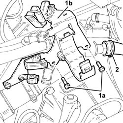
Applies to: engines: 2.5 V6, 3.2 V6; all production periods
1. Undo the bolts (1a) and move the thermostat (1b) to the side.
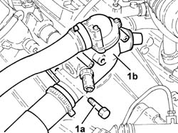
Applies to: engines: 2.5 V6, 3.2 V6; all production periods
1. Remove the circlip (1a) and remove the clutch operating cylinder (1b) from its housing, then place it at the side without disconnecting the pipe.
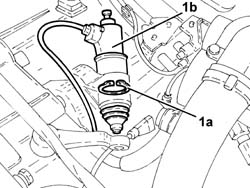
Applies to: engines: 2.5 V6, 3.2 V6; all production periods
1. Undo the bolts (1a) and remove the clutch operating cylinder mounting (1b).
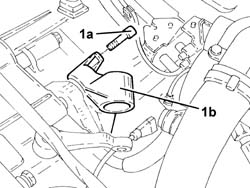
Applies to: engines: 2.5 V6, 3.2 V6; all production periods
1. Remove the connector connecting the left cylinder heat to the thermostat.
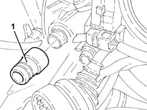
Applies to: engines: 2.5 V6, 3.2 V6; all production periods
Proceed with removal 1008C10 power unit upper reaction link r r .
1. Unod the bolts fixing the left driveshaft to the differential internal driveshaft.
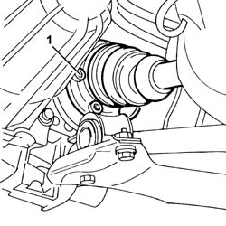
Applies to: engines: 2.5 V6, 3.2 V6; all production periods
1. Position a hydraulic jack under the differential.
2. Undo the bolts securing the gearbox side flexible block to the body.
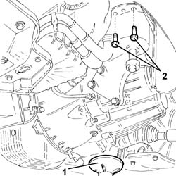
Applies to: engines: 2.5 V6, 3.2 V6; all production periods
Release the power assisted steering system pies from the mounting bracket.
1. Lower the power unit, as necessary, using the hydraulic jack and remove the water pump rigid inlet pipe working via the wheelarch.
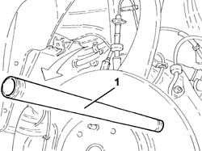
Applies to: engines: 2.5 V6, 3.2 V6; all production periods
Refitting
RemovingPlace the water pump rigid inlet pipe back in its housing.
Place the power unit back in its housing using the hydraulic jack.
Secure the power assisted steering system pipes to the mounting bracket.
1. Tighten the bolts fixing the gearbox side power unit rigid support flexible mounting to the bodyshell to the recommended torque.
 | Fastening | Component | Ø | Value (daNm) |
|---|---|---|---|---|
1 | Bolt | GEARBOX SIDE RUBBER MOUNT | M8 | (Bodyshell side) 3.1 ÷ 3.8 |
2. Remove the hydraulic jack from under the differential.
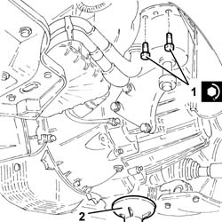
Applies to: engines: 2.5 V6, 3.2 V6; all production periods
1. Tighten the new bolts fixing the left driveshaft to the differential internal driveshaft to the recommended torque.
| Fastening | Component | Ø | Value (daNm) |
|---|---|---|---|---|
1 | Bolt | FRONT DRIVE SHAFT COMPLETE WITH JOINTS | M10 | 5.0 ÷ 6.1 |
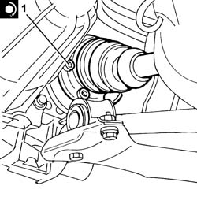
Applies to: engines: 2.5 V6, 3.2 V6; all production periods
Proceed with refitting 1008C10 power unit upper reaction link r r .
Place the connector connecting the left cylinder head to the thermostat back in its housing.
Place the clutch operating cylinder mounting back in its housing and secure it using the bolts.
Place the clutch operating cylinder back in its housing and secure it using the circlip.
Place the thermostat back in its housing and secure it using the bolts.
Connect the engine coolant return pipe from the climate control system heater, thermostat side.
Place the electrical connections mounting bracket on the thermostat back in its housing and secure it using the bolts.
Connect the electrical connection to the engine coolant temperature sensor.
Connect the coil and injector coupling.
Connect the electrical connection for the rear detonation sensor.
Connect the electrical connection for the cam angle sensor.
Connect the electrical connection for the rpm sensor.
Connect the electrical connection to the air flow meter.
Proceed with refitting 5530B52 Battery DRIP TRAY/SUPPORT - R.R. .
Proceed with refitting 5530B10 battery - r+r .
Place the air intake pipe from the flow meter to the throttle casing back in its housing and secure it using the bands.
Plae the exhaust pipe from the right exhaust manifold supporting U-bolt back in its housing and secure it using the nuts.
Tighten the nuts fixing the exhaust pipe from the exhaust manifold, manifold side, to the recommended torque.
| Fastening | Component | Ø | Value (daNm) |
|---|---|---|---|---|
- | Nut | EXHAUST PIPE FROM MANIFOLD | M8 | (exhaust manifold side) 2.5 |
Connect the lower coolant outlet hose to the radiator.
Proceed with the refitting 7055B64 Engine compartment DUST shield in front wheel arch (one), left or right - R.R. (Left side).
Proceed with refitting 7055B54 under-engine guard - r r .
Proceed with the refitting 4450B10 Front WHEEL (one) - R.R. (Left side).
Supply the engine cooling system with the recommended fluid.
 | Type | Component | Name | Qty. |
|---|---|---|---|---|
- | Fluid [l] | ENGINE COOLING CIRCUIT | Mixture 50% Paraflu11 for Alfa Romeo/distilled water | 9.2 |
Remove the car from the ramps.
Applies to: engines: 1.6 TS , 1.8 TS; all production periods
Removing
Refitting7055B54 under-engine guard - r r
1072C12 exhaust manifold - r r
1088D10 lower sleeve for coolant outlet from radiator - r + r
Applies to: all engines; all production periods
Dismantle conditioner compressor without disconnecting its coolant pipes (make reference to op. 5040A20 air conditioner compressor - r+r - includes fluid level check and top up if necessary ).
Applies to: engines: 1.6 TS , 1.8 TS; all production periods
1. Unloose fixing clamp of cooling system supply sleeve and remove it.
2. Unloose fixing clamp of fluid return pipe from heater and remove it.
3. Unloose fixing clamp of radiator lower sleeve.
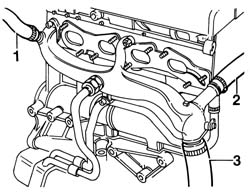
Applies to: engines: 1.6 TS , 1.8 TS; all production periods
1. Unscrew fixing nut of fluid return rigid pipe of water-oil exchanger.
2. Unscrew fixing screws (2a-2b) and release fluid delivery rigid pipe of water-oil exchager.
3. Unscrew the two screws (3a) and nut (3b) fixing fluid inlet rigid pipe to water pump and remove it.
4. Remove gasket from head.
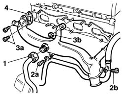
Applies to: engines: 1.6 TS , 1.8 TS; all production periods
Refitting
RemovingClean contact surfaces between head and fluid inlet rigid pipe to pump, refit new spare gasket, position rigid pipe and screw the two screws and fixing nut to head.
| Fastening | Component | Ø | Value (daNm) |
|---|---|---|---|---|
- | Bolt | COOLANT PUMP RIGID INLET PIPE | M6 | 0.8 - 1.19 |
| Fastening | Component | Ø | Value (daNm) |
|---|---|---|---|---|
- | Nut | COOLANT PUMP RIGID INLET PIPE | M8 | 2.3 - 3.3 |
Position fluid delivery rigid pipe of water-oil exchanger and screw the two fixing screws.
| Fastening | Component | Ø | Value (daNm) |
|---|---|---|---|---|
- | Bolt | ENGINE OIL HEAT EXCHANGER | M6 | 0.8 - 1.19 |
Position fluid return rigid pipe of water-oil exchanger and screw fixing nut.
| Fastening | Component | Ø | Value (daNm) |
|---|---|---|---|---|
- | Connector | ENGINE OIL HEAT EXCHANGER | M20 | 4.0 - 1.5 |
Insert radiator lower sleeve, fluid return pipe from heater, system supply sleeve on rigid pipe and tighten their fixing clamps.
Applies to: all engines; all production periods
Refit conditioner compressor (make reference to op. 5040A20 air conditioner compressor - r+r - includes fluid level check and top up if necessary ).
Applies to: engines: 1.6 TS , 1.8 TS; all production periods
1088D10 lower sleeve for coolant outlet from radiator - r + r
Applies to: engines: 1.9 JTD 8v ; all production periods
Removing
Refitting1. Disconnect the system supply pipe from the water pump rigid inlet pipe.
2. Disconnect the coolant outlet pipe from the radiator from the coolant pump rigid inlet pipe to the coolant pump.
3. Disconnect the coolant outlet pipe from the engine oil heat exchanger from the rigid inlet pipe to the coolant pump.
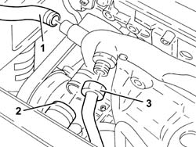
Applies to: engines: 1.9 JTD 8v ; all production periods
1. Disconnect the coolant supply pipe to the engine oil heat exchanger from the thermostat.
2. Disconnect the coolant return pipe from the climate control system heat exchanger from the coolant pump rigid inlet pipe.
3. Disconnect the coolant outlet pipe from the thermostat from the coolant pump rigid inlet pipe.
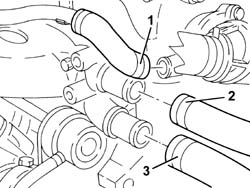
Applies to: engines: 1.9 JTD 8v ; all production periods
1. Undo bolts (1a) and remove the water pump rigid inlet pipe (1b) together with the gasket.
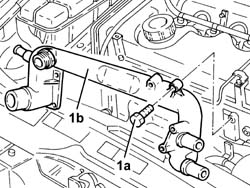
Applies to: engines: 1.9 JTD 8v ; all production periods
Refitting
RemovingFit the water pump rigid coolant inlet pipe complete with a new gasket and fix it tightening the bolts to the recommended torque.
| Fastening | Component | Ø | Value (daNm) |
|---|---|---|---|---|
- | Bolt | COOLANT PUMP RIGID INLET PIPE | M6 | 0.8 - 1.0 |
Connect the coolant outlet pipe from the thermostat to the water pump rigid inlet pipe.
Connect the coolant return pipe to the climate control system heat exchanger from the coolant pump rigid inlet pipe.
Connect the coolant supply pipe to the engine oil heat exchanger to the thermostat.
Connect the coolant outlet pipe from the engine oil heat exchanger to the rigid inlet pipe to the coolant pump.
Connect the coolant outlet pipe from the radiator to the coolant pump rigid inlet pipe to the coolant pump.
Connect the system supply pipe to the water pump rigid inlet pipe.
Top up the engine cooling system with the recommended fluid.
| Type | Component | Name | Qty. |
|---|---|---|---|---|
- | Fluid | ENGINE COOLING CIRCUIT | Mixture 50% Paraflu11 for Alfa Romeo/distilled water | 6.1 |
Applies to: engines: 2.4 JTD 10v; all production periods
Removing
Refitting1088D10 lower sleeve for coolant outlet from radiator - r + r
1. Disconnect the system supply pipe from the water pump rigid inlet pipe.
2. Disconnect the outlet pipe from the water-oil heat exchanger from the water pump rigid inlet pipe.
3. Disconnect the air conditioning system heater outlet pipe from the water pump rigid inlet pipe.
4. Disconnect the coolant outlet pipe from the thermostat from the coolant pump rigid inlet pipe.
5. Undo the bolt for the E.G.R. exhaust gas recirculation pipe band.
6. Loosen the nuts for the E.G.R. exhaust gas recirculation pipe.
7. Undo the bolts (7a) and remove the water pump rigid inlet pipe (7b) complete with gasket.
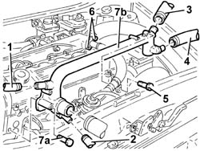
Applies to: engines: 2.4 JTD 10v; all production periods
Refitting
RemovingFit the water pump rigid inlet pipe tightening the bolts to the recommended torque.
| Fastening | Component | Ø | Value (daNm) |
|---|---|---|---|---|
- | Bolt | COOLANT PUMP RIGID INLET PIPE | M6 | 0.8 - 1.0 |
Tighten the nuts securing the E.G.R. exhaust gas recirculation pipe
Tighten the bolt for the E.G.R. exhaust gas recirculation pipe band.
Connect the coolant outlet pipe from the thermostat to the coolant pump rigid inlet pipe.
Connect the air conditioning system heater outlet pipe to the water pump rigid inlet pipe.
Connect the outlet pipe from the water-oil heat exchanger to the water pump rigid inlet pipe.
Connect the system supply pipe to the water pump rigid inlet pipe.
1088D10 lower sleeve for coolant outlet from radiator - r + r
Top up the engine cooling system with the recommended fluid.
| Type | Component | Name | Qty. |
|---|---|---|---|---|
- | Fluid [l] | ENGINE COOLING CIRCUIT | Mixture 50% Paraflu11 for Alfa Romeo/distilled water | 6.8 |
Topics linked from this page (16)
- 1008C10 power unit upper reaction link r r
- 1072C12 exhaust manifold - r r
- 1080C10 e.g.r. valve - r + r
- 1088D10 lower sleeve for coolant outlet from radiator - r + r
- 4450B10 Front WHEEL (one) - R.R.
- 5040A20 air conditioner compressor - r+r - includes fluid level check and top up if necessary
- 5530B10 battery - r+r
- 5530B52 Battery DRIP TRAY/SUPPORT - R.R.
- 7055B54 under-engine guard - r r
- 7055B64 Engine compartment DUST shield in front wheel arch (one), left or right - R.R.
- D80 Coils and fuel injectors connection
- K36 Engine temperature sender unit
- K41 Air flow meter ( ENGINE )
- K46 Rpm sensor
- K47 Timing sensor
- K50 Detonation sensor - 1